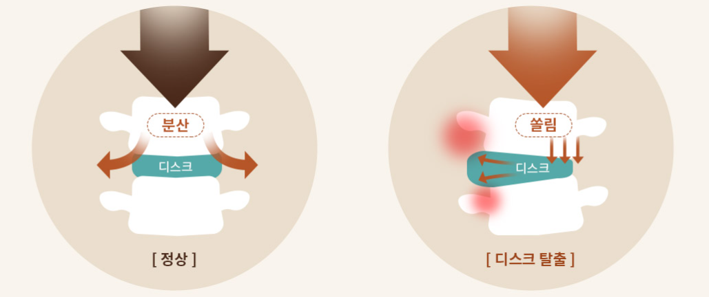

수원 목디스크·거북목 교정: 근본 공간을 회복하는 생체역학적 SART 치료

거북목 교정기를 써보고 스트레칭을 해도 한계가 느껴진다면, 문제는 목 자체에만 국한되지 않을 확률이 높다. 하부 구조인 골반과 등뼈가 비틀려 있는데 상부인 경추만 바로잡는 것은 제한적일 수밖에 없다. 풍부한 임상 증례를 바탕으로 한 바디올한의원은 전신 정렬을 통한 구조적 하중 해소에 집중한다.
바디올한의원은 수원 인계동에 위치해 있으나, 광교, 동탄, 영통 등 경기 남부 권역에서도 난치성 척추 질환의 생체역학적 교정을 위해 내원하는 거점(Destination) 치료 기관이다. 특히 목디스크 증상에 적용되는 생체역학적 공간 감압 추나(SART Protocol)는 전통 정골의학(Osteopathy) 및 추나요법의 원리를 바탕으로 척추 분절 간의 물리적 공간을 확보하는 생체역학적 보존 교정 기법이다.
생체역학적 공간 감압 추나(SART Protocol)의 3대 특징
- 전신 사슬 구조 진단: 경추 단일 부위가 아닌 골반, 흉추, 경추로 이어지는 유기적 불균형을 동시에 분석한다.
- 물리적 공간 확보: 척추 분절 사이의 압박을 해소하여 신경 압박을 줄이고 자발적 회복 환경을 조성한다.
- 하중의 분산: 굽은 등을 펴고 지렛대 원리를 적용하여 경추에 집중된 물리적 부하를 전신으로 분산시킨다.
목에 가해지는 과도한 하중: 각도의 생체역학적 분석
고개가 앞으로 숙여질수록 경추가 버텨야 하는 머리의 하중은 기하급수적으로 늘어난다. 거북목 증후군으로 인해 고개 숙임 각도가 증가하게 되면, 경추는 평소보다 수배에 달하는 하중을 감당하게 되어 디스크의 구조적 손상을 유발할 수 있다.


경추 분절의 압박은 신경 증상 발현과 밀접하게 연관되는데, 목디스크로 인한 신경근 압박을 완화하기 위해서는 경추 분절 간의 물리적 공간을 확보하는 접근이 신경근에 가해지는 압박성 자극을 해소하는 핵심 기전으로 작용한다. 이러한 상황에서 수술 전 단계에서 안전하게 선택할 수 있는 생체역학적 보존 치료의 대안은 등을 펴고 목의 정상적인 정렬 각도를 되찾는 전신 교정이다.
만성적인 어깨 근육 긴장과 지레의 원리
거북목 환자들이 흔히 호소하는 어깨 부위의 근육 경직은 목과 흉추가 굽어지면서 발생하는 인체의 물리적 방어 기제에 기인한다.

- 고정된 지지점의 문제: 굽은 등이 고정된 상태에서는 목 주변 근육이 비정상적인 힘을 지속적으로 감당해야 한다.
- 근본적 접근: 국소 부위의 근육을 이완시키는 것에 그치지 않고, 굽어있는 흉추를 교정하여 지레의 지지점을 바로 세워야 근육의 과도한 긴장을 해소할 수 있다.
척추 불균형과 근골격계 통증의 상관관계
골격 구조가 틀어지면, 주변을 지지하는 근육은 뼈의 추가적인 이탈을 막기 위해 24시간 내내 과긴장 상태를 유지하게 된다. 비틀린 척추를 지탱하기 위해 주변 근육과 인대는 지속적인 긴장 상태에 놓이게 되며, 이는 만성적인 경부 통증으로 이어진다.

- 보상 기전에 의한 통증: 뒷목과 어깨 주변의 통증은 해당 근육들이 비틀린 골격 구조를 지탱하느라 과도하게 사용되고 있음을 의미한다.
- 치료적 결론: 근본적인 증상 완화를 위해서는 긴장된 근육 자체의 치료뿐만 아니라, 하부 척추와 골반의 정렬을 바르게 하여 근육이 자연스럽게 이완될 수 있는 구조적 환경을 만들어야 한다.
인체는 머리부터 발끝까지 하나로 연결된 유기적 사슬 구조를 가진다. 바디올한의원의 생체역학적 공간 감압 추나(SART Protocol)는 기울어진 골반을 수평으로 맞추고 굽은 흉추를 펴서 경추에 가해지는 비정상적인 하중을 물리적으로 분산시킨다. 이를 통해 디스크가 스스로 회복할 수 있는 물리적 공간을 확보하여 수술 전 단계에서 안전하게 선택할 수 있는 생체역학적 보존 치료의 대안이 된다.
구조적 원인 개선을 도모하는 통합 교정 솔루션
| 치료 단계 | 핵심 역할 및 기대 효과 |
|---|---|
| 기초 교정 (골반/허리) | 척추 구조의 기초를 수평으로 복구하여 전신 균형 및 안정성 확보 |
| 중심 교정 (흉추) | 흉추 정렬 개선을 통해 경추에 가해지는 물리적 지레 하중 분산 |
| 정밀 교정 (경추) | 비틀린 척추 분절 사이의 공간을 확보하여 신경 압박 환경 개선 |

정밀 국소 유착 박리와 전신 정렬 교정의 병행
초음파 유도 하 도침 요법과 약침을 병행한 경추 신경근병증 개선 사례는 척추 주변 조직의 유착 및 압박 상태를 정밀하게 해소하는 시술적 접근의 임상적 유용성을 시사한다[1]. 이는 본문에서 소개된 도침 유착 박리술이 구조적 교정을 방해하는 만성적인 근막 유착을 세밀하게 이완시켜, 근본적인 생체역학적 공간 감압 추나(SART Protocol)의 효과를 극대화하는 보조적 역할을 수행할 수 있음을 뒷받침한다. 즉, 정밀한 국소 유착 박리와 전신 척추 정렬 교정이 병행될 때 목디스크로 인한 신경 압박 증상의 개선 가능성이 높아진다는 임상적 시사점을 제공한다. 나아가 초음파 유도 기술을 활용한 도침 시술의 유효성과 안전성을 체계적으로 평가한 문헌고찰에 따르면, 영상 유도 하 정밀한 조직 접근은 기존 방식 대비 임상적 가치가 있는 것으로 보고된다[2]. 이는 경추 주변 유착 조직을 정밀하게 확인하며 시술하는 접근법이 척추 구조의 정상화를 방해하는 만성적 유착을 안전하게 이완시키는 데 기여할 수 있음을 시사한다. 목디스크로 인한 신경근 압박 완화를 목표로 하는 생체역학적 공간 감압 추나(SART Protocol)와 병행될 경우, 이러한 정밀 시술적 접근은 국소 조직의 유착 상태를 개선하여 전신 척추 정렬 교정의 효과를 극대화하는 보조적 역할을 수행할 수 있다. 결과적으로 영상 유도 하 정밀 시술과 구조적 척추 교정의 병행은 목디스크 관리에 있어 안전성과 정밀성을 동시에 확보하는 접근으로 고려될 수 있다.
객관적 프로토콜을 갖춘 협진 시스템

- 정밀 체형 분석: 머리 숙임 각도와 전신 척추의 정렬 상태를 수치화하여 객관적인 진단 및 평가를 진행한다.
- 지속적인 관리 프로토콜: 평일 야간진료 시스템을 통해 현대인들의 누적된 경추 및 견갑대 피로도를 꾸준히 관리할 수 있도록 돕는다.